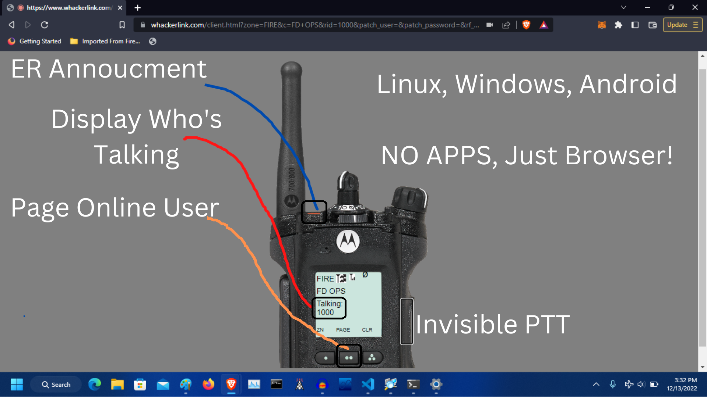

Amateur Radio in a browser!
Whacker Link is a psudo trunking system (aka fake trunking system) that is all web browser based NO APPS, designed and coded by Caleb KO4UYJ. You can transmit in the browser to other people and hams with Windows, Linux, and Android, (sorry Apple users but Apple doesn't want us to do this). You can also order a RF Link to talk on Whacker Link with a radio.
You can talk to people all over the world through the lifelike radio on the internet! There are places called rooms where people can join and talk to other people on there as well. The features and style of this is supposed to be like P25 trunking on a Motorola radio!
Register for WhackerLink for free! register link Then once you get your ID you can go to Whacker Link Radio page and use the system!
Please feel free join the discord server to speak with the devs and community plus you can ask questions and have fun! discord.gg/j8mvzfjrz !